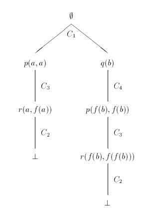

モデル生成法
モデル生成法は、与えられた入力節(MG節と呼ぶ)集合
S に対するモデルを、
次のような手続きに従って構成的に求めようとするものである。
以下では、構成途中のモデルをMで表し、これをモデル候補と呼ぶ。
また、モデル候補の集合を MC で表す。
- MCの要素として、初期モデル候補
M0={}を設定する。
- MCのある要素Mに対し、
後述のモデル拡張規則あるいはモデル棄却規則のいずれかが適用可能なとき、
その規則を適用して MC を更新する。
- 上記2のステップを可能な限り繰り返す。
- MC のすべての要素Mに対して、
いずれの規則も適用できなくなったとき、手続きは終了する。
この手続きが終了したとき、MCが空になっていれば、
S にはモデルが存在しない(すなわち、充足不能である)ことが結論できる。
さもなければ、すべての要素
M ∈ MC が
いずれも S のモデルとなっている。
ここで、モデル拡張規則とモデル棄却規則は以下のとおりである。
- モデル拡張規則
モデル候補Mに対して、
非負節 A1,..,An → B1;...;Bm
ならびに、ある基礎代入 σ が存在して、
σAi (1≦i≦n) がすべてMで充足され、
かつ σBj (1≦j≦m) のいずれもMで充足されないならば、
Mをm個のモデル候補
M∪{σBj} (1≦j≦m) で置き換えて拡張(場合分け)する。
- モデル棄却規則
モデル候補Mに対して、負節
A1,..,An → false ならびに、
ある基礎代入 σ が存在して、
σAi (1≦i≦n) がすべてMで充足されるならば、
Mを棄却する。
ここで、前件 A1,..,An がMで充足されるような
σ を求める操作を連言照合と呼ぶ。
例として次の節集合(問題Sと呼ぶ)に関するモデル生成法の
証明木を以下の図に示す。
C1: true --> p(a,a); q(b).
C2: r(X,f(X)) --> false.
C3: p(X,X), p(X,Y) --> r(X,f(Y)).
C4: q(X) --> p(f(X),f(X)).

もどる